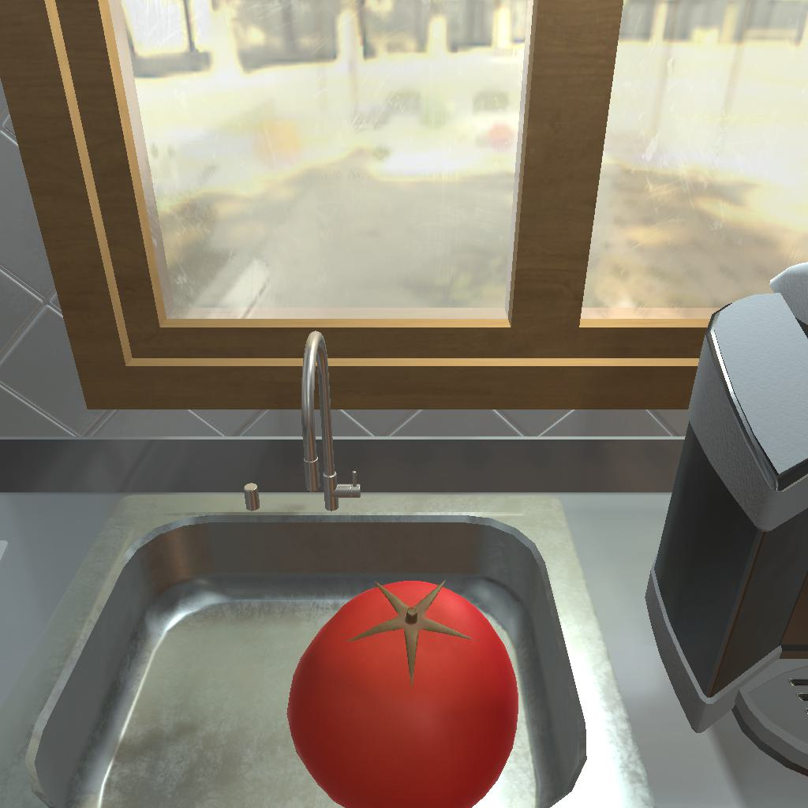

---------------------------------------------------------task: 12---------------------------------------------------------
--------------------------------------------------------------------------------------------------------------------------------------------------------------------
--------------------------------------------------------------------------------------------------------------------------------------------------------------------
Step:--------------------------------------------------------------------------16-------------------------------------------------------------------------------
----------------------------------------
VLM Prompt:
Image1:
**Instruction**
1. Analyze the provided image to identify all visible household objects, focusing on those relevant to the task description "clean some tomato and put it in countertop."
2. Use the analysis of the image and the task hint "The agent must find an object of the desired type, pick it up, go to a sink or a basin, clean the object with a sink or basin, and then find the correct location to place it and put it down there. The agent does not need to use soap bottle or faucet to clean the object, and the agent just needs to do action that is "clean the object with the sink or sink basin"." to answer the question: what is the most reasonable action in the choices for the task description "clean some tomato and put it in countertop"?
4. Decide and write the answer using the template: The answer is: (i): , where i is the real number. If there is no desired object in the image, search every place based on **Initial Observation** to find the object. And if no one is exactly correct, choose a similar answer.
**Initial Observation**
You are in the middle of a room. Looking quickly around you, you can see cabinet (1-6), microwave (1), countertop (1-2), coffeemachine (1), toaster (1), sink (1), sinkbasin (1), fridge (1)
**Answer Choices**
(1): go to cabinet 1
(2): go to cabinet 2
(3): go to cabinet 3
(4): go to microwave 1
(5): go to cabinet 4
(6): go to cabinet 5
(7): go to cabinet 6
(8): go to countertop 1
(9): go to coffeemachine 1
(10): go to toaster 1
(11): go to countertop 2
(12): go to sinkbasin 1
(13): go to fridge 1
(14): put tomato 1 in/on sink 1
(15): clean tomato 1 with sink 1
(16): clean tomato 1 with sinkbasin 1
(17): examine tomato 1
(18): examine sink 1
**Answer**
Let's think step by step by following the instructions.
----------------------------------------
----------------------------------------
Original Response:
The task description is "clean some tomato and put it in countertop." From the image, we can see a tomato in the sink basin. Therefore, the first step of cleaning the tomato has been completed, as it is already in the sink basin. The next step is to find the correct location to place it after cleaning.
From the initial observation, we know there are two countertops in the room. Since the task does not specify which countertop to use, we can choose either. However, since we do not see any countertops in the provided image, we cannot determine which is the closest or most appropriate based on the image alone.
Based on the task and the information provided, the most reasonable action from the choices would be to place the cleaned tomato on one of the countertops. Since we do not have specific information on the location of the countertops, we can choose either countertop 1 or countertop 2.
The answer is: (8): go to countertop 1 or (11): go to countertop 2. Since we need to choose one, we'll go with the first option mentioned.
The answer is: (8): go to countertop 1.
----------------------------------------
----------------------------------------
>>> Refine Original VLM Response and Get Pure Action: go to countertop 1 or (11): go to countertop 2
----------------------------------------
-----------------------------------------------------------------
Running time: 16.452629327774048 seconds
Total Money: 3.7628799999999996
-----------------------------------------------------------------
-----------------------------------------------------------------
Text Observation:Nothing happens.
-----------------------------------------------------------------
UNSUCCEED